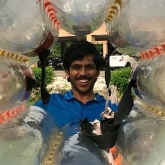

Hi. I'm Arvind Sankar.
As a freelancer with a background in law and technology, I specialize in patent-related services including specification drafting, office prosecution, and portfolio management. In addition, I am well-versed in data extraction, analytics, and machine learning, and am actively exploring the field of legal automation. I am currently developing tools for Indian patent data extraction and automating patent drafting. I hold a BBA LLB degree from National Law University, Odisha and am currently pursuing a BS degree from the Indian Institute of Technology, Madras.